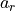

nexoclom2.atomicdata¶
nexoclom2 routines for working with atomic data
Submodules¶
- nexoclom2.atomicdata.atom
- nexoclom2.atomicdata.charge_exchange
- nexoclom2.atomicdata.eimp_emission_coef
- nexoclom2.atomicdata.eimp_ionization_coef
- nexoclom2.atomicdata.extract_chX_coefs
- nexoclom2.atomicdata.extract_eimp_coefs
- nexoclom2.atomicdata.gvalues
- nexoclom2.atomicdata.lossrate
- nexoclom2.atomicdata.reformat_gvalues
Classes¶
Class to compute g-values and radiation acceleration |
|
Class containing all useful atomic data for a neutral or ionic species. |
Functions¶
|
Calculate the loss rates due to photons, electron impacts, and charge-exchange |
Package Contents¶
- class nexoclom2.atomicdata.gValue(species)¶
Class to compute g-values and radiation acceleration
The g-value is the product of the solar flux at the dopler-shifted emission wavelength and the scattering probability per atom. See Killen, R.M. et al., Ap. J. Supp., 2022 for details on calculating g-values for important species in Mercury’s atmosphere.
These g-values have been calculated for this solarsystem at a reference distance of 0.352 AU.
Methods are provided to return the g-values for each resonant wavelength and radiation acceleration as functions of distance from the Sun and radial velocity relative to the Sun.
Radiation acceleration  is computed by:

where
 is g at wavelength
is g at wavelength  ,
,  is
Planck’s constant,
is
Planck’s constant,  is the mass of the species in question, and the
sum is over all resonant wavelengths.
is the mass of the species in question, and the
sum is over all resonant wavelengths.- Parameters:
- speciesstr
atomic species
- Attributes:
- wavelengthsastropy Quantity array
Wavelengths are rounded to the nearest Angstrom.
- velocityastropy Quantity array
Radial velocity relative to the Sun
Methods
gvalue(drdt, r=1*u.au)
Dict with g as function of
drdtandrfor each resonant wavelengthradaccel(drdt, r=1*u.au)
Radiation acceleration as function of
drdtat the reference distance from the Sun- species¶
- gvalue(drdt, r=1.0 * u.au)¶
g as function of radial velocity and solar distance
- Parameters:
- drdt: astropy Quantity array
Radial velocity relative to the Sun
- r: astropy Quantity array
Distance from the Sun. Default = 1 AU
- Returns:
- Dictionary with g-values at each point for each wavelength as function
- of
drdtandr
- radaccel(drdt, r=1.0 * u.au)¶
radial acceleration as function of radial velocity and solar distance
- Parameters:
- drdt: astropy Quantity array
Radial velocity relative to the Sun
- r: astropy Quantity array
Distance from the Sun. Default = 1 AU
- Returns:
- radiation acceleration at each point as function of
drdtandr
- radiation acceleration at each point as function of
- __eq__(other)¶
- __repr__()¶
- __str__()¶
- class nexoclom2.atomicdata.Atom(species: str)¶
Class containing all useful atomic data for a neutral or ionic species.
- Parameters:
- species: str
Atomic species. Charge is indicated by the number of ‘+’ or ‘-’ appended to the chemical symbol
- Attributes:
- charge: int
Electric charge
- symbol: str
Chemical symbol
- name: str
- number: int
- mass: astropy Quantity
- gvalues: nexoclom2 gValue object
- photo_refpt: astropy Quantity
Reference point for the photoionziation rate (generally 1 AU)
- photo_rate: astropy Quantity
Photoionization rate at the reference point
- photo_reactions: list
List of tuples containing each photoreaction included and its rate at the reference point
- wavelengths: tuple
List of wavelengths for which there are photon scattering rate coefficients (g-values) or electron impact excitation rate coefficients.
- _atom: Element
Object from periodictable saved in case there is additional infomation the user might need.
- eimp_ionization: nexoclom2 EimpIonizationCoef object
- eimp_emission: nexoclom2 EimpEmissionCoef object
- _atom¶
- charge¶
- symbol¶
- name¶
- number¶
- mass¶
- gvalues¶
- photo_refpt¶
- eimp_ionization¶
- eimp_emission¶
- wavelengths¶
- charge_exchange¶
- __str__()¶
- __repr__()¶
- __eq__(other)¶
- nexoclom2.atomicdata.lossrate(packets, output)¶
Calculate the loss rates due to photons, electron impacts, and charge-exchange with optional constant loss rate.
- Parameters:
- packets: nexoclom2 Packets object
- output: nexoclom2 Output object
- Returns:
- Ionization rate
Notes
Charge exchange is not included yet.